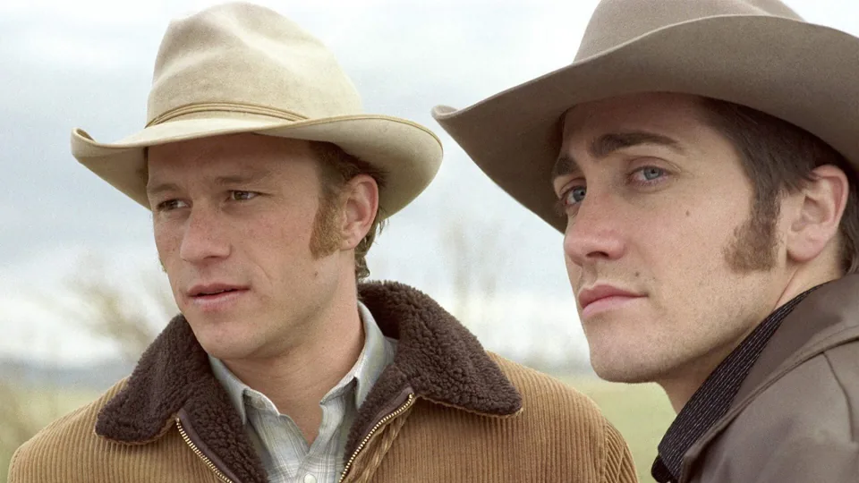

Três dos atores mais populares de Hollywood recusaram um grande papel. O diretor do filme, diante de vários obstáculos de produção, abandonou o projeto. Essa é a história de uma obra que estava em declínio e ressurgiu como um clássico moderno, conquistando três prêmios da Academia. Desta forma, consolidou seus astros como estrelas da dramaturgia.
Ennis e Jack criam uma profunda conexão durante um verão de pastoreio nas montanhas do Wyoming na década de 1960. À medida que a vida e os anos os separam, seu amor se intensifica, apesar dos desafios. É então que ambos terão de viver uma vida dupla com suas famílias, presos entre seus desejos e as normas da sociedade. Quem já assistiu com certeza já matou a charada: estamos falando de O Segredo de Brokeback Mountain.
Baseado no conto homônimo de Annie Proulx, de 1997, o diretor Gus Van Sant, conhecido pelo filme Good Will Hunting, foi o primeiro a considerar a possibilidade de transformá-lo em um filme. Entretanto, vários atores da época, que já tinham carreiras estabelecidas, recusaram-se a participar. Como resultado, Van Sant decidiu abandonar o projeto, conforme revelou em uma entrevista ao IndieWire.
“Ninguém queria fazer o filme. Eu estava trabalhando no filme e senti que precisávamos de um elenco realmente forte, como um elenco famoso. Não deu certo. Entrevistei os astros de sempre: Leonardo DiCaprio, Brad Pitt, Matt Damon, Ryan Phillippe. Todos eles disseram não", desabafou o diretor.
Tanto Pitt quanto DiCaprio estavam comprometidos com outros projetos e não puderam participar do filme. Foi então que Ang Lee assumiu a direção de Secret on the Mountain e escolheu Jake Gyllenhaal (O Abutre) e Heath Ledger (Batman - O Cavaleiro Das Trevas) para liderar o elenco.
O filme se tornou um sucesso de bilheteria e de crítica. Com um orçamento de 14 milhões de dólares, arrecadou mais de 178 milhões de dólares. Também ganhou três Oscars nas categorias de Melhor Diretor, Melhor Roteiro Adaptado e Melhor Trilha Sonora Original.